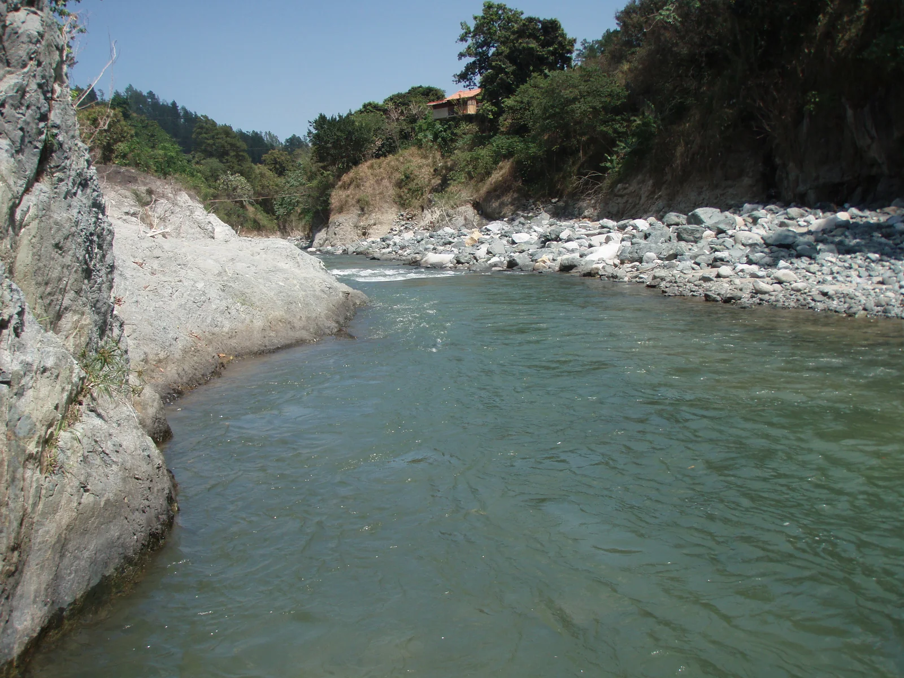

Reunir fuentes, antecedentes y preguntas. Conservar la memoria de cada causa.
República Dominicana
Distintas voces.
Una misma
tierra.
Conectamos conocimiento, criterio técnico y acción ciudadana para defender el agua, el territorio y nuestro futuro compartido.
Información que mueve causas.

POR LAS PRÓXIMAS20GENERACIONES
Cada afluente tiene su origen.
Juntos hacemos corriente.
Fuentes a la vistaCriterio técnicoAcción compartida
La idea que nos reúne
Una causa necesita
una corriente
que la sostenga.
Una preocupación puede ser el comienzo. El conocimiento y la colaboración le dan dirección.
Confluencia nace como un punto de encuentro para reunir información que ayude a comprender los problemas ambientales, sostener la protesta ciudadana y dar seguimiento a las decisiones que afectan nuestro territorio.
Conectamos las capacidades de comunidades, profesionales y comunicadores. Cada persona y organización conserva su voz, su identidad y su autonomía.
Traducir información técnica en materiales claros y útiles para la conversación pública.
Conectar esfuerzos y dar continuidad a solicitudes, compromisos y respuestas.
Las causas
El territorio es uno.
Las causas se conectan.
Empezamos por la minería.
La mirada va más allá.
Primer frente
Minería, agua
y territorio
Fuentes y preguntas para examinar proyectos, sus implicaciones y las decisiones que nos afectan.
Explorar la colecciónEn nuestro horizonte
Cuencas
y bosques
Conservar el agua, recuperar los suelos y acompañar una reforestación con seguimiento.
Próxima línea de trabajoEn nuestro horizonte
Biodiversidad
y comunidad
Cuidar las especies nativas y endémicas junto a quienes conocen y habitan el territorio.
Próxima línea de trabajoNuestro primer frente
Minería
bajo la lupa.
El debate sobre minería merece documentos a la vista, preguntas concretas y la experiencia de las comunidades.
Empezamos reuniendo herramientas para leer un proyecto, contrastar sus fuentes y reconocer la información que todavía falta.
Línea de investigación inicialSan Juan y el proyecto Romero
El expediente propio está en preparación. Aquí reunimos fuentes de partida; su inclusión no confirma el estado actual del proyecto.
Las preguntas que abren el expediente
¿Qué se propone y dónde?
Identificar el promotor, la ubicación, la fase del proyecto y los documentos que describen su alcance. Distinguir lo propuesto de lo aprobado y lo ejecutado.
¿Qué debemos saber sobre el agua?
Buscar los estudios sobre fuentes de abastecimiento, calidad del agua, usos existentes y medidas de seguimiento. Registrar lo que se conoce y lo que requiere verificación.
¿Qué dicen los documentos?
Conservar el título, autor, fecha y versión de cada estudio, autorización o comunicación. Leer su alcance y sus condiciones antes de sacar conclusiones.
¿Cómo se escucha al territorio?
Reunir las preguntas de las comunidades, identificar los espacios de participación anunciados y documentar las respuestas que se reciban.
La biblioteca abierta
Toda buena causa
necesita buenas fuentes.
Un punto de partida para investigar.
Consulta siempre el documento original.
6 fuentes para empezar
Catastro minero
Explora el visor de derechos mineros y consulta la ubicación de las áreas registradas.
Dirección General de MineríaConsultar fuente
Derechos mineros
Consulta el mapa nacional y el listado descargable publicados por la Dirección General de Minería.
Dirección General de MineríaConsultar fuente
Atlas de los recursos hídricos
Accede a la publicación del INDRHI sobre los recursos hídricos de la República Dominicana.
INDRHIConsultar fuente
Entender el registro minero
Conoce qué información reúnen el registro de derechos mineros y el catastro nacional.
EITI República DominicanaConsultar fuente
Solicitar información pública
Accede al portal gubernamental para presentar solicitudes de acceso a información pública.
Portal SAIPIr al portal oficial
Romero: la información de GoldQuest
Lee la descripción, los mapas y los antecedentes técnicos publicados por la empresa promotora.
GoldQuest Mining Corp.Consultar fuente
No encontramos esa fuente.
Prueba otro término o vuelve a mostrar todas las fuentes.
Una fuente es el comienzo de una investigación. Identificamos quién publica y distinguimos los documentos oficiales de la información de las empresas. Colección inicial: noviembre de 2026.
Nuestro compromiso editorial
La confianza también
se construye.
Defender una causa exige cuidar la calidad de lo que compartimos.
Fuentes visibles
Autoría, fecha y enlace para que cada persona pueda contrastar la información.
Hechos, análisis y preguntas
Distinguimos la evidencia disponible de las interpretaciones y los asuntos pendientes.
Correcciones y autonomía
Corregimos cuando aparece mejor evidencia y reconocemos las contribuciones de cada quien.
Tu conocimiento también cuenta
Toda corriente
empieza con un aporte.
Un documento, una pregunta bien planteada, una revisión técnica o conocimiento del territorio pueden ayudar a que una causa avance.
Crea una ficha para descargar y compartir con quienes impulsan tu causa.
Conservación activa. Futuro compartido.
Si usted no siembra,
no hay sombra.